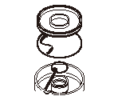
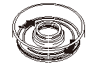
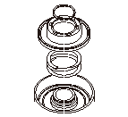
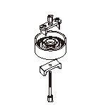
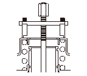
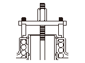
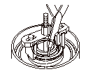
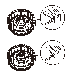
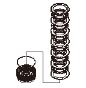
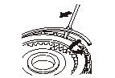

1速クラッチの組立
専用工具
クラッチ スプリング コンプレッサ セット 07LAE-PX40000
クラッチ スプリング コンプレッサ アタッチメント 07HAE-PL50100
クラッチ スプリング コンプレッサ アタッチメント 07LAE-PX40100
ボルト セット10 07GAE-PG40200
スナップ リング プライヤ 07LGC-0010100
専用工具をバイスなどで固定すると組立しやすい。
クラッチ ディスクをATFに30分間以上浸す。
クラッチ ピストン（A）とクラッチ ドラム（B）に新品のOリング（C）を取付ける。

クラッチ ピストン（A）をクラッチ ドラム（B）に入れ、ピストンを回しながら取付ける。Oリングが外れないよう確実に取付ける。

リターン スプリング（A）とスプリング リテーナ（B）を取付け、スプリング リテーナの上にスナップ リング（C）を置く。

専用工具をセットする。

クラッチ リターン スプリング（D）の上にスプリング リテーナ（C）、スナップ リング（B）をのせて専用工具（A）をセットする。
スプリング リテーナ シール リップ部およびクラッチ ピストン内径部にATFを十分に塗布する。

リターン スプリングを圧縮する。徐々に圧縮してリテーナが傾いたり、変形しそうな場合は、専用工具のアタッチメントの位置を変える。

スナップ リングを取付け、専用工具を取外す。

スプリング リテーナ シール リップの取付け状態が均一で全周にめくれやキズなどがないことを確認する。スプリング リテーナ シール リップにめくれやキズがある場合はスプリング リテーナを新品に交換する。

クラッチ ピストンにウェーブ スプリング（A）を取付ける。クラッチ ドラム（B）にクラッチ ウェーブ プレート（C）（6枚）、クラッチ ディスク（D）（6枚）の順で交互に取付け、クラッチ エンド プレート（E）を、プレートの平らな面をクラッチ ディスクに向けて取付ける。

スナップ リングを取付けて、クラッチ エンド プレートを固定する。
クラッチ ドラムのオイル通路の片側をふさぎ、片側の通路にエアを吹き込んでクラッチ ピストンのつながりを点検する。また、エアを止めたときにクラッチの切れることも確認する。

 専用工具をバイスなどで固定すると組立しやすい。
専用工具をバイスなどで固定すると組立しやすい。
専用工具をバイスなどで固定すると組立しやすい。
専用工具をバイスなどで固定すると組立しやすい。